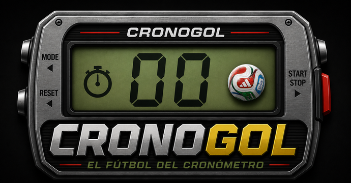

← Inicio

Modos de juego
CronoGol tiene dos formas principales de jugar: modo clásico y modo rápido. Los dos usan el cronómetro, pero cambian el ritmo de la partida.
Modo clásico
Es el modo más fiel al juego original. El gol solo llega con 00, y aparecen eventos especiales como poste, larguero, tarjetas, falta, penalti, descanso y final.
- Más tensión.
- Menos goles.
- Más sensación de partido largo.
- Ideal para jugar con calma.
Modo rápido
Está pensado para partidas más cortas y con más acción. Todo número terminado en 0 es gol, y todo número terminado en 9 es penalti.
- Más goles.
- Más penaltis.
- Partidas más rápidas.
- Ideal para móvil o partidas casuales.
¿Cuál elegir?
Si quieres nostalgia y tensión, elige Clásico. Si quieres una partida rápida con más goles, elige Rápido.
1 vs 1 local
Dos jugadores comparten el mismo dispositivo. Cada uno juega su turno y el marcador se actualiza automáticamente.
1 vs Máquina
Juegas contra la máquina. La máquina tira automáticamente cuando le toca. En el futuro, CronoGol tendrá modo online con salas privadas.